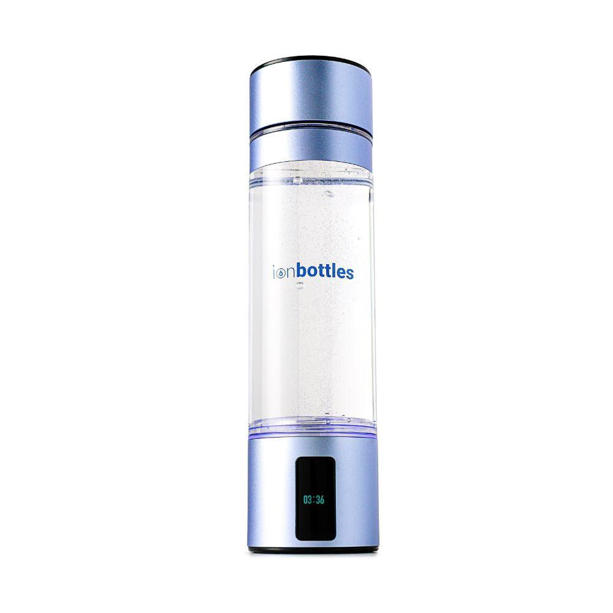

Marke: ionBottlesHydrogen Bottle
ionBottles ATOM™
10-oz-Hydrogenflasche mit OLED-Zyklusanzeige, DuPont-PEM und USB-C-Schnellladung.
ca. €128
Technische Daten
| H₂-Konzentration | bis 5,0 ppm, laut Anbieter extern laborgeprüft |
| Volumen | 10 oz / ca. 295 ml |
| Technologie | DuPont PEM, Doppelkammer, ozonfreie Ausgabe laut Anbieter |
| Anzeige | OLED: Zeit, Modus und Akku |
| H₂-Retention | bis 13 Stunden laut Anbieter |
| Material | BPA-freier Tritan-Körper |
| Akku | USB-C, unter 2 h; 12–15 Zyklen |
| Garantie | 1 Jahr; 60-Tage-Rückgabe |
| Shoppreis | 149 USD; gerundet in Euro dargestellt |